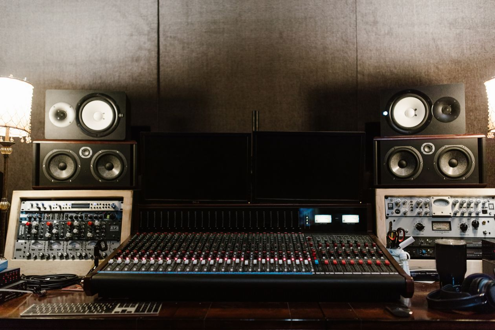

SHEET 00 — THE PROPOSITION
Sound you can measure, in a room you can check.
I’m Jonas Weber, an acoustic engineer in Bristol. I measure rooms, design studios and listening rooms, and publish every figure I work to — the modes your room will boost, the decay time you should aim at, and what the fix costs — before you spend anything on gear. What changes sound, in order: the room, the placement, the source. Cables come a distant fourth, and I sell none.

The room, computed — its axial modes
Every small room is an instrument tuned by its dimensions. Below roughly 200 Hz the room — not your speakers — decides what you hear: standing waves, called modes, boost some bass notes and cancel others. A mode forms where a sound wave fits exactly between two walls: the first axial mode of a dimension is f = c ÷ 2L, half a wavelength long. Put your room in. The arithmetic is shown in full, and the hand-done table underneath is the same formula — check the machine against the table.
| DIMENSION | 1ST MODE | 2ND MODE | 3RD MODE |
|---|---|---|---|
| Length 4.2 m | 40.8 Hz | 81.7 Hz | 122.5 Hz |
| Width 3.6 m | 47.6 Hz | 95.3 Hz | 142.9 Hz |
| Height 2.5 m | 68.6 Hz | 137.2 Hz | 205.8 Hz |
Length, worked in full: f₁ = 343 ÷ (2 × 4.2 m) = 40.8 Hz — then ×2 and ×3 for the harmonics above.
Lowest axial mode: 40.8 Hz (length). Below it the room cannot support a standing wave at all — bass down there is pressure, not resonance, and no panel will change that.
Cross-over estimate ≈ 178 Hz (Schroeder frequency, from the Sheet 02 target in 37.8 m³). Below it, treat modes; above it, treat reflections. It is an estimate — a survey measures the real transition.
| LENGTH | 1ST MODE | 2ND MODE | 3RD MODE |
|---|---|---|---|
| 3.0 m | 57.2 Hz | 114.3 Hz | 171.5 Hz |
| 4.0 m | 42.9 Hz | 85.8 Hz | 128.6 Hz |
| 5.0 m | 34.3 Hz | 68.6 Hz | 102.9 Hz |
| 6.0 m | 28.6 Hz | 57.2 Hz | 85.8 Hz |
Set the length stepper to 4.0 m above: the explorer must read 42.9 / 85.8 / 128.6 Hz, matching this table. If it ever disagrees, the table is right and I want to know. The same check works at 5.0 m (34.3 Hz) and 6.0 m (28.6 Hz).
| FINDING | WHAT IT IS | THE FIX | FROM THE RATE CARD |
|---|---|---|---|
| Modes bunching or piling up under ~100 Hz | Standing waves set by the dimensions | Seat & speaker placement first, then floor-to-ceiling corner trapping | Survey £420 · traps £140 fitted |
| A long decay time (Sheet 02) | Too little absorption for the volume | Panels at the first-reflection points and on the ceiling | £85 per panel, fitted |
| Flutter echo between bare parallel walls | The same reflection arriving again and again | One wall absorbs, the opposite wall scatters (diffusion) | Design from £1,450 |
The decay budget — an RT60 estimate
The other half of a room is how long sound hangs around. RT60 is the time a sound takes to decay by 60 dB — the standard measure of a room’s liveness. The Sabine formula is the trade’s standard first approximation: A = 0.161 × V ÷ T, where A is the absorption needed, in square metres (sabins). It assumes a diffuse field and evenly spread absorption, which no real room has — so treat what follows as a budget to start from, never a promise. Uses the dimensions from Sheet 01.
What α ≈ 0.95 means: the panels I fit are 100 mm mineral wool behind fabric, which absorbs about 95% of mid-frequency sound hitting it. The figure is an average across the speech and music bands — the panel’s tested coefficient, not a slogan. What Sabine cannot do: size bass trapping. Low modes are a placement and corners problem (Sheet 01); this budget covers mid-band absorption only, and a survey may well conclude you need fewer panels than this, better placed.
Hear the numbers — the tone bench
Frequency figures are abstract until you hear them. These are pure sine tones, generated in your browser at the moment you press a button — this page is silent until you ask it not to be, and each tone stops itself after two seconds. This is the one place on the site that makes a sound, because here the sound is the lesson: it is what 100 Hz actually means.
IDLE. No tone playing. Nothing on this page makes a sound until you press one of the buttons above.
Pick a tone. Afterwards, this line tells you what that band does in a real room — including the bands your speakers probably cannot reproduce.
Hearing safety: tones play at a fixed low level set in the code, and stop after two seconds. Keep your device volume moderate anyway — and if 50 Hz sounds like nothing, read its note before turning anything up.
Services & the printed rate card
Every price I work to is on this page. If a job can’t be done at these rates, I say so before the survey, not after the invoice.
| SERVICE | WHO FOR | FORMAT | PRICE | STATUS | |
|---|---|---|---|---|---|
| Measurement & report | Any room that has to sound right | Half-day visit; written report in 5 working days | £420 flat | Booking now — December slots | Book → |
| Control-room design | Recording & project studios | Drawings, treatment schedule, placement plan | From £1,450 / room | 1 slot — January | Book → |
| Treatment supply & install | Studios, listening rooms | Panels and corner traps, fitted and re-measured | £85 / panel · £140 / trap | Booking now | Book → |
| Listening-room tune | Home hi-fi owners | Half day: measure, move, re-measure | £340 flat | Booking now | Book → |
| Podcast room package | Voice & podcast studios | Survey + 12 panels fitted + microphone placement card | £1,650 fixed | Waitlist — January | Book → |
What moves the price: room size and scope first — a 60 m³ live room is not a 15 m³ podcast box. Then structure: floating floors, isolated shells and silenced ventilation are building work, quoted as building work after the survey. Then distance — flat prices hold within 40 miles of Bristol; beyond that, travel at cost, agreed in advance. What never moves the price: the badge on your speakers. The room cannot tell what they cost, and neither can the microphone.
“Jonas measured first and argued with my speaker placement, not my speakers. The kick drum sits in one place now — in the room, and in the car on the way home.”
— DAN WHITFIELD, MIX ENGINEER & STUDIO OWNER, LEEDS · ON CASE 01 (PROJECTS)
Send the dimensions. Get the modes back.
Email me your room’s length × width × height and what it’s for. The first reply names the modes your room will produce — computed from your dimensions, exactly as Sheet 01 does — whether or not you book anything.
Book a measurement